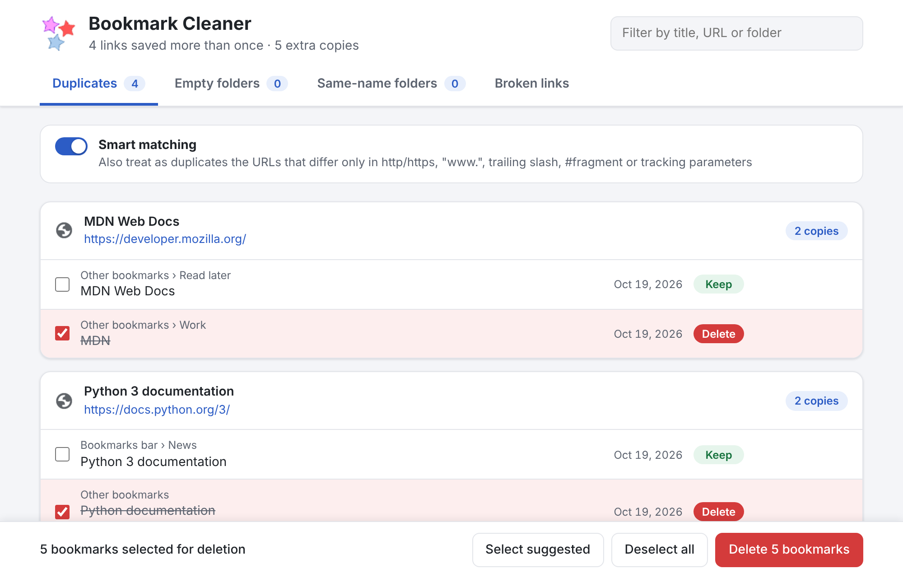

Why Bookmark Cleaner
🔍 Every duplicate, every folder
Scans the bookmarks bar, other bookmarks and synced folders, and shows where each copy lives and when you saved it.
🧠 Smart URL matching
Optionally treats http://www.site.com/page/, https://site.com/page#top and links with utm_* tracking parameters as the same page.
✅ Sensible defaults
The oldest copy is kept and the others are pre-selected. Change it with a click or press “Keep only this”.
🛡️ You can’t lose a bookmark
At least one copy of each link is always kept, even if your bookmarks change while you decide.
↩️ One-click undo
Deleted bookmarks go back to their original folder and position.
📁 Empty and same-name folders
Removes folders without bookmarks and merges folders with the same name into one.
🔗 Broken links (opt-in)
Checks every bookmarked page and lists the ones that do not exist anymore. It runs only when you ask, after your permission.
🔒 Private by design
No analytics, no tracking. Your bookmarks never leave your computer.
How to remove duplicate bookmarks
- Click the Bookmark Cleaner icon in the Chrome toolbar.
- Review the duplicates, grouped by link. Click a copy to switch it between Keep and Delete; use the filter to find a site or folder.
- Press Delete and confirm. Changed your mind? Press Undo.
Install
Add to Chrome from the Chrome Web Store
One click, free, with automatic updates. Bookmark Cleaner requires Chrome 104 or later and should also work in other Chromium-based browsers such as Edge and Brave.
To try the development version from source instead:
- Download the latest version and unzip it.
- Open
chrome://extensionsand switch on Developer mode. - Click Load unpacked and select the unzipped folder.
Frequently asked questions
How do I remove duplicate bookmarks in Chrome?
Chrome has no built-in way to find duplicate bookmarks. Install Bookmark Cleaner from the Chrome Web Store, click its icon in the toolbar and it lists every link saved more than once, grouped by URL, with the extra copies already selected. Press Delete to remove them; you can undo right after.
Can I lose a bookmark by mistake?
No. Bookmark Cleaner always keeps at least one copy of each link, asks for confirmation before deleting and offers an Undo button that puts the deleted bookmarks back in their original folder and position.
Does it find bookmarks that differ only slightly?
Yes. With smart matching on, links that differ only in http/https, www., a trailing slash, a #fragment or tracking parameters such as utm_source are treated as duplicates.
Can it also remove empty folders and broken links?
Yes. Besides duplicates, Bookmark Cleaner finds folders without bookmarks, merges folders with the same name in the same place, and, if you allow it, checks every bookmarked page to find the ones that do not exist anymore. Every change asks for confirmation and can be undone.
Does Bookmark Cleaner send my bookmarks anywhere?
No. It has no analytics and no tracking, and it never sends your bookmarks anywhere. It contacts the bookmarked websites only if you start the optional broken-link check, which asks for your permission first and only checks whether each page still exists.
Does it work with synced bookmarks and other browsers?
It works on all the bookmarks in your Chrome profile, including those synced from other devices. It requires Chrome 104 or later and should also work in other Chromium-based browsers such as Edge and Brave.